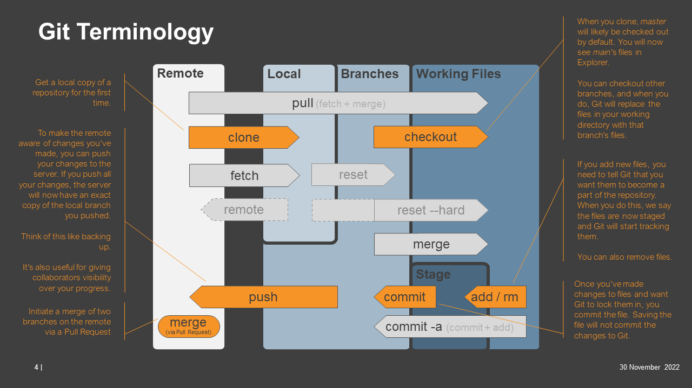

Git overview
First let’s clarify some software and their roles (colours relate to the diagram below):
GitHub: Is a platform for storing version controlled code. TAU’s GitHub is managed by ITB under TMR’s enterprise GitHub.
PyCharm / VSCode: These are IDEs you’re using to write code in a workspace (which remains “staged” there until you commit it to your local repository)
Git: Is the software that handles the version controlling of your code and acts as the communication interface between your IDE and GitLab.
Now for some Git terminology and how these features interact:
Clone/pull: Clone/pull a project (set of code) from a remote repository to your workspace (local)
Branch: All code has a “main” (sometimes called “master”) branch. The main branch contains the latest working version of all code. You will probably have cloned this branch (although you can clone others). Now you want to start making some changes so you will create a branch of your own, which is a point-in-time deviation from the main branch.
Commit: You’re now working on the branch you created making changes that won’t impact the main branch. Well done, this is good practice. As you make changes in an IDE they’re probably being saved automatically, but when you reach particular milestones you may want to commit those changes. Think of this as a hard save so you have a marker in time that you can go back to. But commits are still only local.
Push: Because you live in fear of losing your work that was not backed up, at the end of each day you make a habit of pushing your code to the remote repository to back it up and let others see where you’re up to. When you push whilst on a branch, you’re still not messing with the main branch, you’re now putting your branch in the remote repository and pushing to that. No harm done!
Merge: You’ve now made all the changes you want to make on that branch and you’re ready to merge it into the main branch. To do this you create a merge request. The maintainer of your repository can talk you through protocols around this as they may vary from project to project.
The below diagram outlines how these actions relate to one another as well as some additional actions.
For those within TMR, you can listen to our GitHub training videos for more information.
Watch ‘Git Fundamentals - Session 1 of 2’ | Microsoft Stream (Classic) Watch ‘Git Fundamentals - Session 2 of 2’ | Microsoft Stream (Classic)